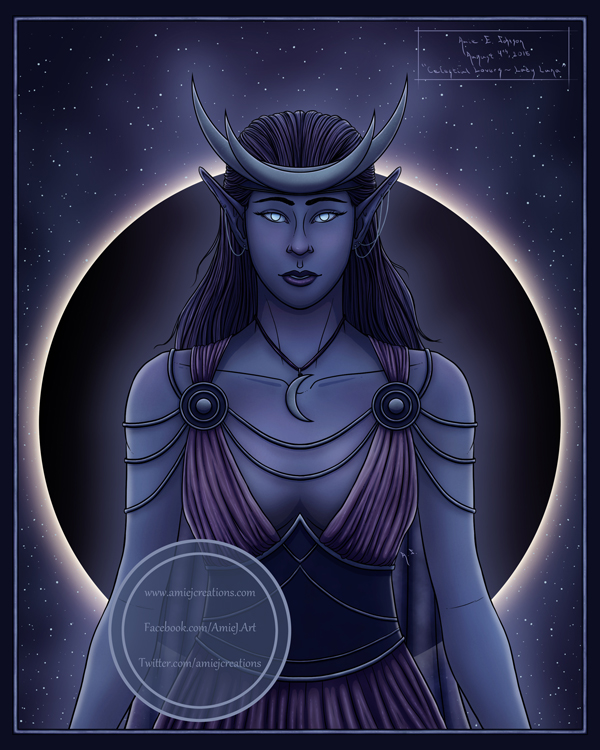

Celestial Lovers - Lady Luna
This painting is the first of a companion piece I am working on called "Celestial Lovers" featuring "Lady Luna" - Goddess of the Moon and "Lady Sol" - Goddess of the Sun. It is a sad yet beautiful love story in which the two goddesses are destined to love each other from a far, never meeting, except on the rare occasion of an eclipse.
(Original painting - 8x10 inches)

Close-up Images
Close-up of some detail on the crescent moon crown and hair.
Close-up of the mouth and some hair details.
Close-up of some detail on the dress top and ornamental clasp.
Close-up of some detail on the dress and top of the corset.
Close-up of some detail of the dress, bottom of the corset, and cape.